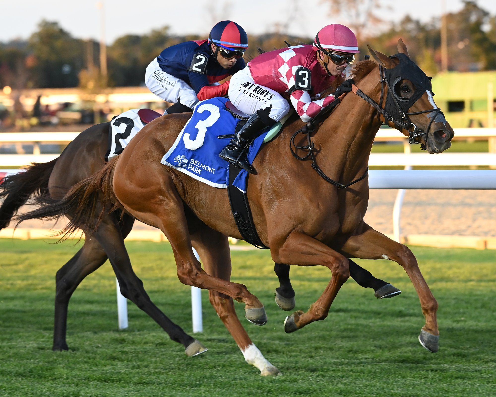

Americathegreat se estrena en el grupo con la Sands Point Stakes de Belmont
Americathegreat, hija de Curlin preparada por Mark Casse, firmó este jueves su primer éxito en una prueba de grupo al llevarse la Sands Point Stakes (G3T) de Belmont Park. La potra, de tres años, corre con los colores de Gary Barber y D. J. Stable LLC.

La Sands Point se corre cada otoño en el meeting de Belmont sobre 1 milla y media (unos 1.800 metros) de hierba y está reservada a potras de tres años. La bolsa es de 200.000 dólares y el nivel la coloca entre las grandes citas de la categoría en el calendario neoyorquino. En su palmarés figuran nombres como La Coronel.
Americathegreat llegaba a Belmont tras una buena carrera en Woodbine el 1 de agosto, donde terminó segunda en una allowance de siete furlongs y medio. Antes había debutado en Churchill Downs en mayo de 2025 con una tercera plaza en una prueba de arena, carrera en la que entró tarde pero cerró la fuerte. Casse apuntaba desde el principio hacia pruebas de hierba de mayor fondo.
El pedigrí la respaldaba: Curlin, campeón del año en Estados Unidos en dos ocasiones, es padre de hierba y arena por igual, y la madre A.P. Indy aporta el fondo que la Sands Point exigía. El equipo de Casse completa así una temporada de calado con una pupila nueva en el grupo justo antes del cierre del meeting.
Por Martín Larrañeta